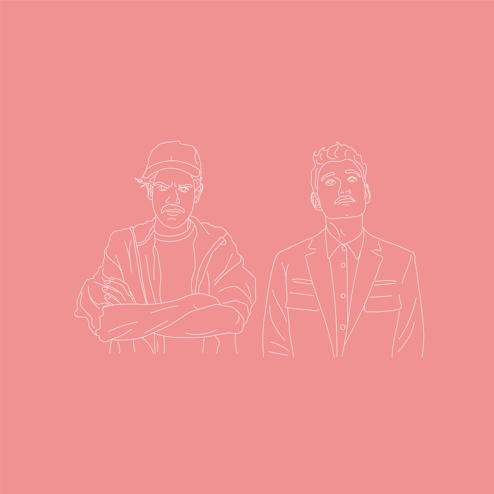
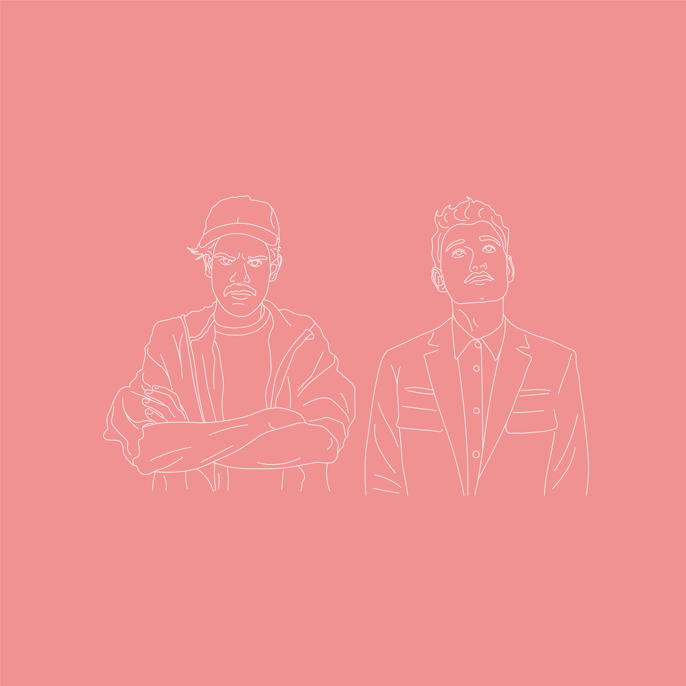

Taco i Dawid Album Cover
This album cover was created for a contest sponsored by Spotify Premium for Taco Hemingway and Dawid Podsiadło. It uses minimalistic techniques with interesting overlays to create a intriguing patter and effect. It uses drawn outlines of the images, as well as the physical images themselves to combine them into one, unique composition.
#graphicdesign | #branding | #albumcover


 
